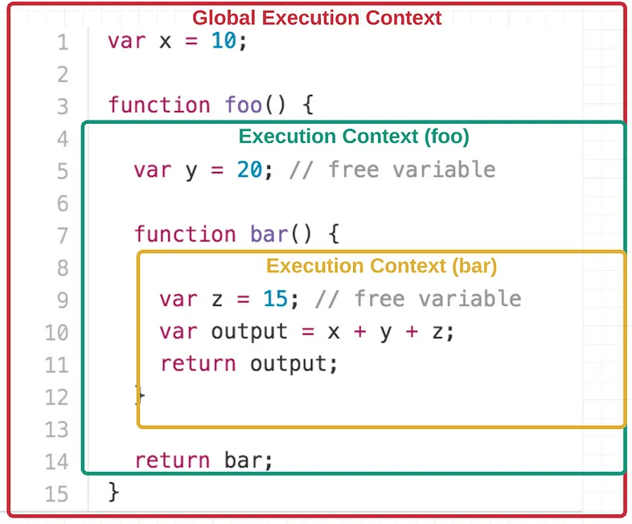

Functions and Function Expressions
Created for
Created by
Defining Functions
Function declaration vs Function Expression
- Function declaration (statement):
- Semicolons are note required after function declaration. But there will be no problem if you put one.
- Function expression:
- usually (depending on context), semicolons are required after function expression as with any expression. A best (and safer) practice is to put the semicolons after function expression.
- function name can be omitted in function expressions to create anonymous functions
function add(x,y){
return x+y
}
const add = function(x,y){
return x+y
};
// an anonymous function is passed as the first argument to setTimeout()
setTimeout(function() {
console.log("This message is shown after 3 seconds.");
}, 3000);
Function expression: do not rely on ASI - Example
- Next code throws an error: "TypeError: foo is not a function"
- Next code works as expected:
- Remember, a best practise is to put semicolons manually to separate statements and expressions, instead of relying on Automatic Semicolon Insertion (ASI)
let a,b;
const foo = function () {
console.log(`Foo`);
} // Missing semicolon here
[a,b] = [4,3];
console.log(a,b);
foo();
let a,b;
const foo = function () {
console.log(`Foo`);
}; // Semicolon added here
[a,b] = [4,3];
console.log(a,b);
foo();
Function expression: named function
- A function name can be given in function expression. But the function name is scoped to function body!
- Using a named function in expression is useful for debugging purposes.
const foo = function add(x,y){
return x+y
};
console.log("foo(2,3):", foo(2,3)); // foo(2,3):5
console.log("add(2,3):", add(2,3)); // ReferenceError: add is not defined
Function Expression vs. Function Declaration
- Hoisting
- Function declarations are hoisted
- Function expressions are not hoisted
Function Constructor
- Another way to define a function is by Function Constructor.
- In practise, you'll never have to use directly Function Constructor, but only when you need to dynamically create a function.
- Functions defined by Function Constructor are parsed each time the constructor is called.
- Functions defined by Function Expressions and Function Declarations are parsed only once.
- Reference: Function Constructor@MDN
const greet = new Function('userName',
'console.log(userName)');
greet('Ada')
>Immediately-invoked function expressions (IIFE)
Immediately-invoked function expressions (IIFE)
IIFEImmediatelyInvokedFunctionExpression
- When a function will be used only once (usually - to create a local scope), we do not need to define it first.It's more efficient to invoke it as an anonymous function.
- The need for IIFE, an anonymous function which must be executed immediately, is usually when a library is created in order not to pollute the global namespace.
How to create an IIFE
function(){}is an anonymous function declaration!( function(){} )is an anonymous function expression (everything in()is executed as expression ).- We can only invoke a function expressions.
- Example:
- is the same as:
( function(){} )();
(function(x,y){
console.log( x+y );
})(2,3);
(function(x,y){
console.log( x+y );
}(2,3));
>Functions as first-class citizens
Functions as first-class citizens
- From its creation back in 1995, JavaScript supports functions as first-class citizens (objects)
- Which simply means that:
- A function can be treated as object, expression or statement.
- A function can be passed as argument to other functions.
- A function can be the return value of the
returnoperator.
"Callback Function"
- A function which is passed as argument to another function usually is called callback function
- Reference: Callback function
function caller(f) {
// f is a "callback function"
f()
}
function foo(){
console.log(`Foo`);
}
caller(foo);
Callback Function - Example
setTimeout expects a callback function as first argument
const greeting = function(){
alert("Welcome");
}
setTimeout(greeting, 2000);
Callback Function - Example
addEventListenerexpects a callback function as second argument- Note, that usually callback functions are anonymous
window.addEventListener('load', function(event){
console.log('The page is fully loaded');
});
Function as return value
- A function can be returned from another function
// greeting function returns a function
const greeting = function(name){
return function(){
alert("Welcome, "+ name);
}
}
setTimeout(greeting("Ada"), 2000);
Function as return value - example
const sum = function(x){
return function(y){
return x+y;
}
}
console.log( "sum:", sum(2)(3) );
First-Class Functions: Pros and Cons
- Pros
- The new (ES6) arrow functions syntax (discussed in next lectures) make JavaScript a language suited for lamdba-calculus (functional programming paradigm)
- Cons
- Not intuitive for persons used with classical procedural languages.
>Scope
Recap Scope
What is Scope?
- Scope is the context in which values and expressions are "visible," or can be referenced
- Global Scope
- Variables defined outside of any function, block, or module scope are in the global scope and can be accessed from anywhere in the code.
- Local (Function) Scope
- Each function in JavaScript creates its own scope. Variables defined within a function are accessible only within that function, illustrating local scope.
- A new local scope is created on every function execution
- Scopes can be layered in a hierarchy, allowing child scopes access to parent scopes, but not vice versa
- Inner Scope can use the names in Outer Scope
- Outer Scope can not see the names defined in Inner Scope
- If same name is defined in both Scopes, then the Inner Scope name shadows the Outer Scope name

Execution Context
Execution Context
- An execution context in JavaScript is the environment in which JavaScript code is evaluated and executed
- Whenever any code runs in JavaScript, it runs inside an execution context that provides the variables, objects, and functions available for use
- Each time a function is executed, it creates a new execution context, which includes a local scope for that execution
- This means that all local variables (including parameters) are specific to that execution instance
- If the function is called multiple times, each call creates its own local scope, independent of other executions, ensuring variables defined in one call do not interfere with those in another. 
{kind=link}
>Closure
Closure
What is?
- A closure is a feature in JavaScript allowing a function which is executed outside its lexical scope, to preserve the values of scoped variables.
- Closure is observed when a function uses variable(s) from outer scope(s) even while running in a scope where those variable(s) wouldn't be accessible.
- A closure is formed when a function is declared, allowing it to capture and remember the environment in which it was created, including any variables it has access to at that time.
- In essence, the function within the closure "remembers" the environment in which it was created.
function outer(){
let x = 5;
function inner(){
console.log(x);
}
return inner;
}
let f = outer();
f(); // f can access the value of local x !
Common problem: "closures in loops"
var cats = [];
for (var i = 0; i < 3; i++) {
cats[i] = function(){
console.log(`Cat ${i} is ready!`);
}
}
cats[0](); //Cat 3 is ready!
cats[1](); //Cat 3 is ready!
cats[2](); //Cat 3 is ready!
- The function inside the loop is created within the scope of the loop. It captures (or closes over) the variable
ifrom its outer scope, which is the loop. However, becauseiis global variable, the function does not capture the value ofi, but a reference to the variableiitself. - So, each function created in the loop retains access to the same
ivariable - the global variablei. - When we execute the functions, after the loop is finished, the value of
iis 3, that's why all of the functions logs 3 - But if
iwas local or block scoped, each function created in the loop would have access to its own copy ofiat the time the function was defined. As a result, the functions would log the intended values (0, 1, 2) instead of 3, preserving the state ofifor each iteration independently.
"closures in loops" - let solution
- Using
letfor the loop variableicreates a unique block scope for each iteration, allowing each closure to capture and remember its own version ofiwith values 0, 1,and 2 respectively.
var cats = [];
for (let i = 0; i < 3; i++) {
cats[i] = function(){
console.log(`Cat ${i} is ready!`);
}
}
cats[0](); //Cat 3 is ready!
cats[1](); //Cat 3 is ready!
cats[2](); //Cat 3 is ready!
"closures in loops" - IIFE solution
- Within each iteration, an IIFE is used. This function is invoked immediately after its definition, encapsulating the current i value.
- The IIFE takes the current value of
ias an argument,passing it toj, creating a new scope for each iteration of the loop
var cats = [];
for (var i = 0; i < 3; i++) {
(function(j){
cats[j] = function(){
console.log(`Cat ${j} is ready!`);
}
})(i)
}
cats[0](); //Cat 0 is ready!
cats[1](); //Cat 1 is ready!
cats[2](); //Cat 2 is ready!
"closures in loops" - Factory solution
- The "factory solution" for handling closures in loops involves creating a function that returns another function, effectively creating a closure for each iteration of the loop
var cats = [];
function catMaker(i){
return function(){
console.log(`Cat ${i} is ready!`);
}
}
for (var i = 0; i < 3; i++) {
cats[i] = catMaker(i);
}
cats[0](); //Cat 0 is ready!
cats[1](); //Cat 1 is ready!
cats[2](); //Cat 2 is ready!
TASK: "closures in loops - timeout Problem"
- The intended behavior of the provided code is to change the background color of the
div.boxto each color specified in the colors array ("red", "green", "blue") in sequence, with each color change happening 1 second apart - You task is to fix the bug
- the easiest solution is to make
iblock scoped, declaring it withlet, but for the sake of practice imagine that you are writing a library which must works on ES5 (and let is introduced in ES6)
var colors = ["red", "green", "blue"];
var box = document.querySelector('.box');
function changeBG(color){
box.style.background = color;
}
for (var i = 0; i < colors.length; i++) {
setTimeout(function(){
console.log(`i:${i}`);
changeBG( colors[i] );
}, 1000*i)
}
>Resources
Resources
Books
Recursion
Recursion
- A recursive function is a function which calls itself (directly or indirectly)
- Each call creates a separate function stack (space in memory)!
- Recursion can be endless if we do not take care when it has to stop!
Function Call Stack
- Function call stack (or just "the call stack" or "the stack") is a place in RAM which is created for maintaining the local variables and parameters during function execution
- After the function finish its job, i.e. returns to the calling function, the stack is removed.
{kind=link}
Calculate Factorial - definition
- In mathematics, the factorial of a positive integer n, denoted by n!, is the product of all positive integers less than or equal to n
- Reference: Factorial @wikipedia
Calculate Factorial - Iterative Solution
function factorielIter(n) {
let res = 1;
for(let i = 1; i<=n; i++){
res *= i;
}
return res;
}
console.log(factorielIter(3));
Calculate Factorial - Recursive Solution
function factorial(n){
if (n === 1) {
// f(1) = 1 => the END condition
return 1;
}else {
// f(n) = n * f(n-1)
return (n * factorial(n - 1));
}
}
console.log( factorial(3) );
Calculate Factorial - Recursive Solution - Diagram

Recursive Power Calculation
function power(base, exponent) {
if (exponent == 0)
return 1;
else
return base * power(base, exponent - 1);
}
console.log(power(2, 10));
- Can you think of iterative solution?
Traversing the DOM - example
___MainSectionTitle___
___MainSectionTitle___
___SubSectionTitle___
Homework
Simple Counter (DOM)
Simple Counter (DOM)
- The task is given in next gist file
- You can copy it and work directly on it. Just put your code under "### Your code here".
Simple Counter (DOM)
Vaious tasks on functions
- The tasks are given in next gist file
- You can copy it and work directly on it. Just put your code under "### Your code here".
These slides are based on
customised version of
framework